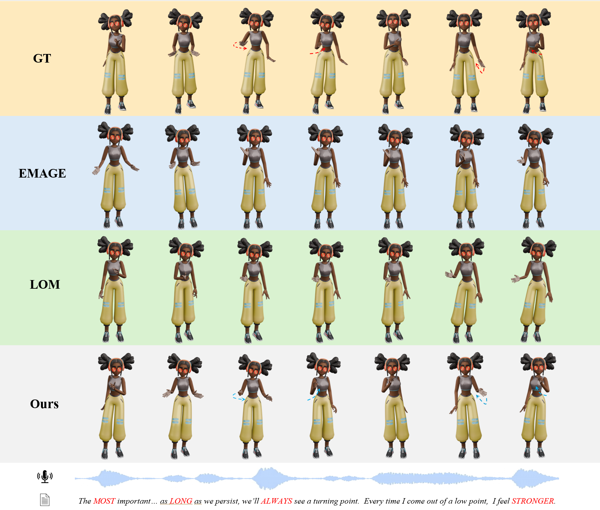

Existing co-speech gesture generation methods are predominantly studied in offline settings, where gestures are synthesized from complete speech segments. However,interactive digital humans in real-world scenarios are required to generate speech-synchronous gestures online,using only currently available response audio under strict latency constraints. As a result, prior methods are unsuitable for real-time interaction, as they either rely on future speech in formation or incur substantial inference delay. In this paper, we formulate online co-speech gesture generation for interactive digital humans and propose a real-time interactive framework that couples a streaming speech response module with an online gesture generation module.Specifically, the gesture generator is designed as a causal multimodal autoregressive model that predicts body motion from streaming response speech and motion history, enabling low-latency and speech-aligned gesture synthesis without access to future speech.To support this setting, we further propose an offline data synthesis pipeline tailored to virtual companion scenarios, which leverages topic-and emotion-aware subject corpora to construct diverse human-agent dialogues and then generates co-speech gestures conditioned on the agent responses. Moreover, to bridge the gap between offline data construction and online deployment, we establish a self-evolving training loop by incorporating user feedback collected during online interaction into the data generation process, enabling continual adaptation to user preferences. Extensive experiments demonstrate that our framework achieves superior better latency-quality trade-off, stronger speech-motion synchronization, and higher user preference than competitive offline-to-online adapted baselines.
Figure 2. An overview of Super Star. (a) Offline interactive data synthesis and self-evolving loop pipeline for constructing virtual companion-oriented training data that continuously adapts to user preferences. (b) Online real-time interaction pipeline, where a streaming speech response module is coupled with our online gesture generator to produce low-latency co-speech motions.

Figure 3. Qualitative comparison of online co-speech gesture generation.Given the same streaming response speech, our method reacts more promptly and generates more natural and synchronized gestures than offline-to-online adapted baselines.